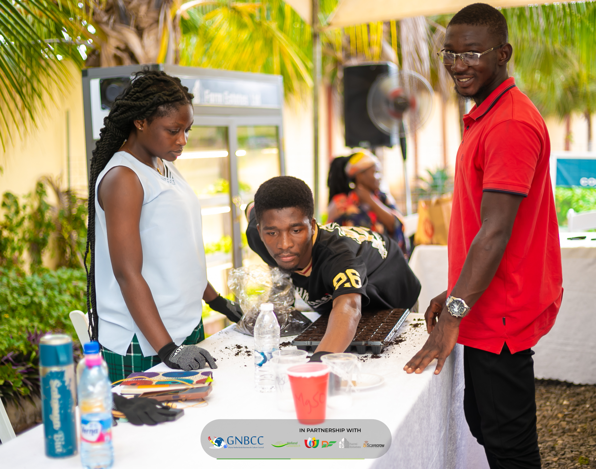
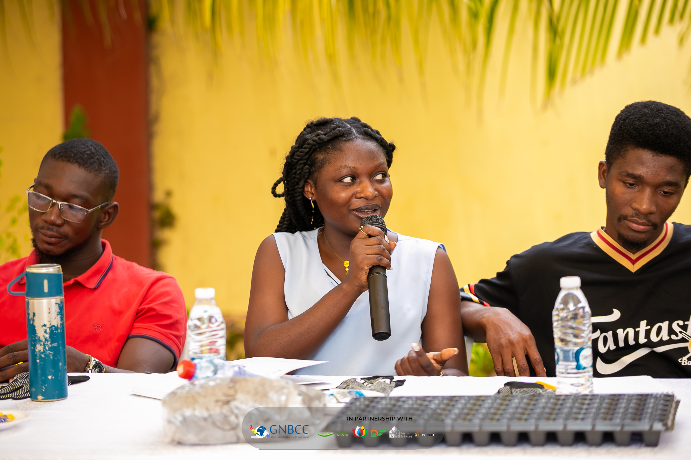
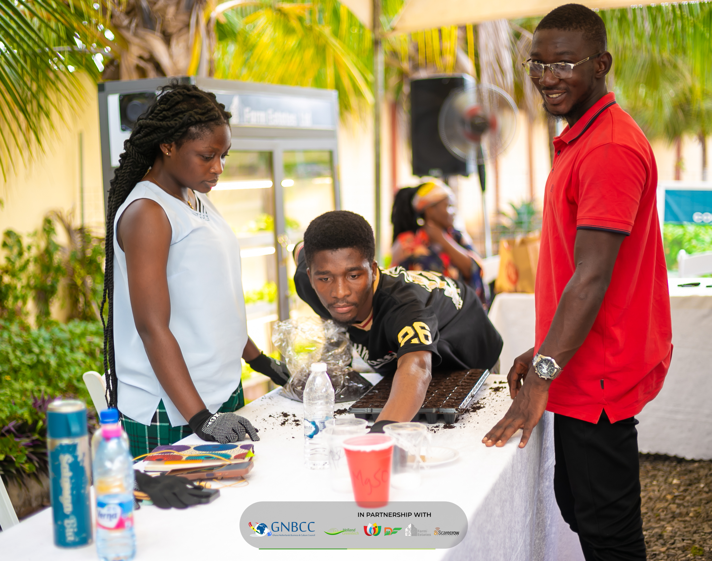
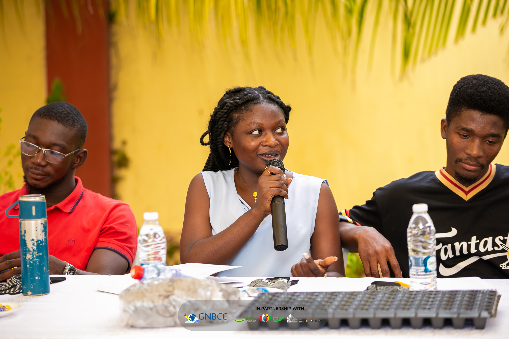

About Me

Joyce Apagyiwa Inkoom is a Junior Front-end Web Developer. She also is the winner of Horticulture Business Challenge, HBC 2024. Joyce is a graduate of the University of Ghana and holds a degree in Medical Laboratory Science. She also is the founder of Dominas Gallery, a photography and videography company. She is into the agritech space and currently has an initiative called PotaFarm. Joyce serves as a volunter mentor at Camfed Ghana and Enpact where she mentors young entrepreneurs to build resilience.
- ✔Communication
- ✔Team Work
- ✔Time Management
- ✔Innovative

 


